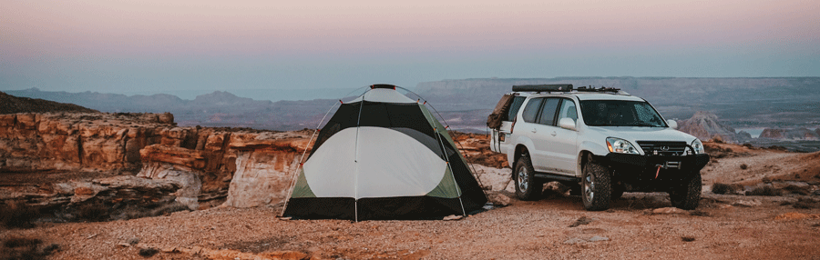
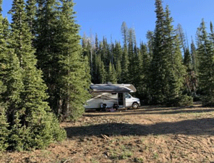
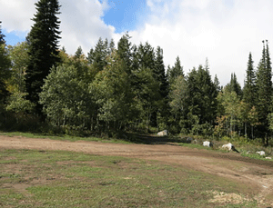

Dispersed Camping Locations
Free Camping Locations, no electricity, fresh water, or sewer.

Tom's Best Spring
- Dixie National Forest
- Toms Best Spring Rd. (FR-117) Panguitch, UT
- 435-676-9300
- 435-865-3700
- GPS: 37.7275, -112.2477
- Price: $0
- Longest RV Reported: 44 feet
- Pad Type: dirt
- Open Seasonally: Yes
- Elevation 7,841 ft / 2,389 m
- Max Stay: 16 days
- Tent Camping: Yes

Uinta
- Uinta-Wasatch-Cache National Forest
- Utah 150 Kamas, UT
- 307-789-3194
- 801-999-2103
- GPS: 40.8756, -110.8312
- Price: $0
- Longest RV Reported: 30 feet
- Open Seasonally: Yes
- Elevation: 8,464 ft / 2,579 m
- Max Stay: 14 days
- Tent Camping: Yes

Stout Canyon
- Dixie National Forest
- FR-062Duck Creek Village, UT 84762
- 435-865-3200
- 435-865-3700
- GPS: 37.4915, -112.5631
- Price: $0
- Longest RV Reported: 40 feet
- Pad Type: Dirt
- Elevation: 7,808 ft / 2,379 m
- Max Stay: 16 days
- Tent Camping: Yes

Salamander Flat
- Uinta-Wasatch-Cache National Forest
- Hwy 92 Alpine Loop Scenic Byway Provo, UT 84604
- 801-785-3563
- 801-999-2103
- GPS: 40.4395, -111.6271
- Price: $0
- Longest RV Reported: 28 feet
- Pad Type: Dirt
- Elevation: 7,545 ft / 2,299 m
- Max Stay: 16 days
- Tent Camping: Yes

Murdock Basin
- Uinta-Wasatch-Cache National Forest
- Murdock Basin Rd. (FR-137) Kamas, UT 84036
- 435-783-4338
- 801-999-2103
- GPS: 40.6318, -110.9528
- Price: $0
- Longest RV Reported: 35 feet
- Pad Type: Dirt
- Open Seasonally: Yes
- Elevation: 8,891 ft / 2,709 m
- Max Stay: 14 days
- Tent Camping: Yes

Whitney Reservoir
- Uinta-Wasatch-Cache National Forest
- FR-639 Kamas, UT
- 307-789-3194
- 801-999-2103
- GPS: 40.8331, -110.9343
- Price: $0
- Longest RV Reported: 33 feet
- Pad Type: Dirt
- Open Seasonally: Yes
- Elevation 9,317 ft / 2,839 m
- Max Stay: 14 days
- Tent Camping: Yes